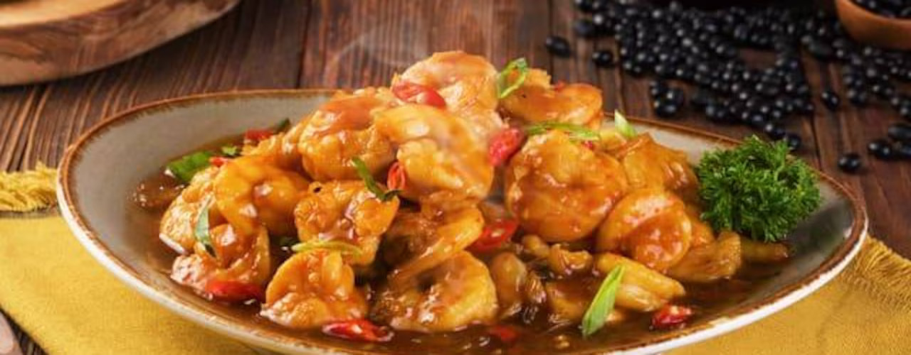

Udang Saus Tiram

Lengkapi santap malam seafood dengan resep udang saus tiram yang satu ini. Lezat dan istimewa, ternyata cara memasak udang saus tiram tidaklah sulit dan membutuhkan waktu yang terlalu lama
Bahan-bahan
- 500 g udang, bersihkan dengan dikupas kulitnya, kemudian belah punggungnya
- 1 sdt garam
- 1/2 sdt merica bubuk
- 4 sdm mentega / margarin
- 5 siung bawang putih, cincang halus
- 1 buah bawang bombay, iris tipis
- 6 sdm saus tiram
- 4 sdm Bango kecap manis
- 2 sdm kecap asin
- 3 sdm minyak wijen
- 50 cc air
Cara memasak
- Lumuri udang dengan garam dan merica bubuk sampai rata, diamkan kurang lebih selama 15 menit, kemudian goreng dalam minyak banyak dan panas sampai matang dan kering, angkat, lalu tiriskan dan sisihkan
- Panaskan margarin, kemudian masukkan bawang putih dan bawang bombay, tumis sampai harum
- Masukkan saus tiram, kecap manis Bango, kecap asin, minyak wijen, dan air, sampai rata, masak sampai mendidih, kemudian masukkan udang tadi, aduk rata, angkat, dan terakhir sajikan